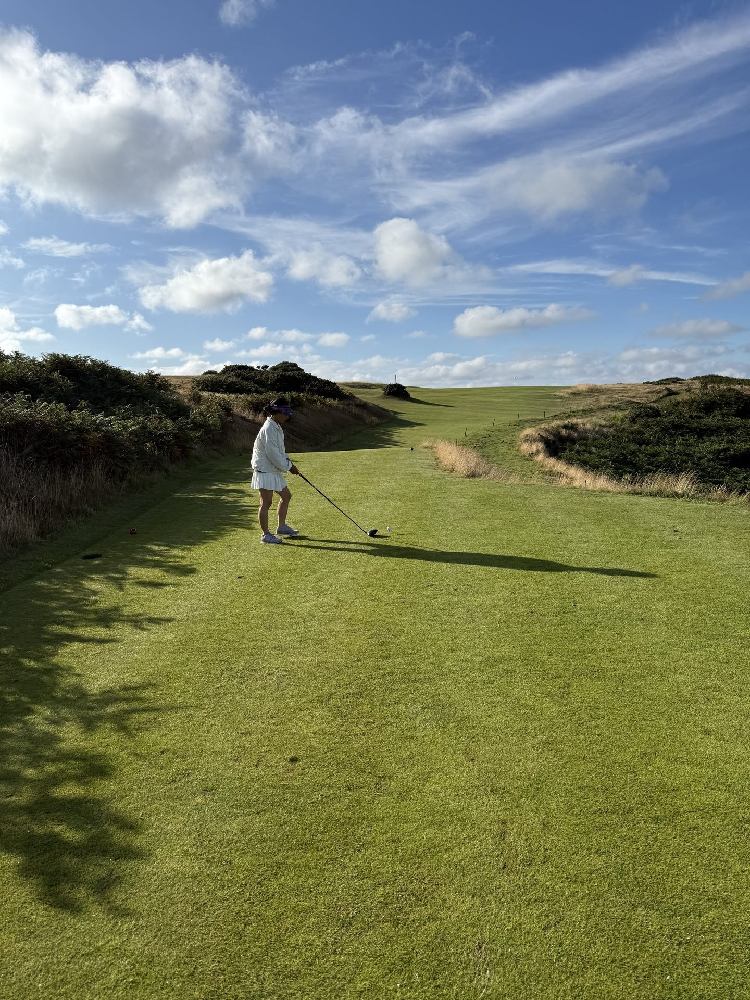
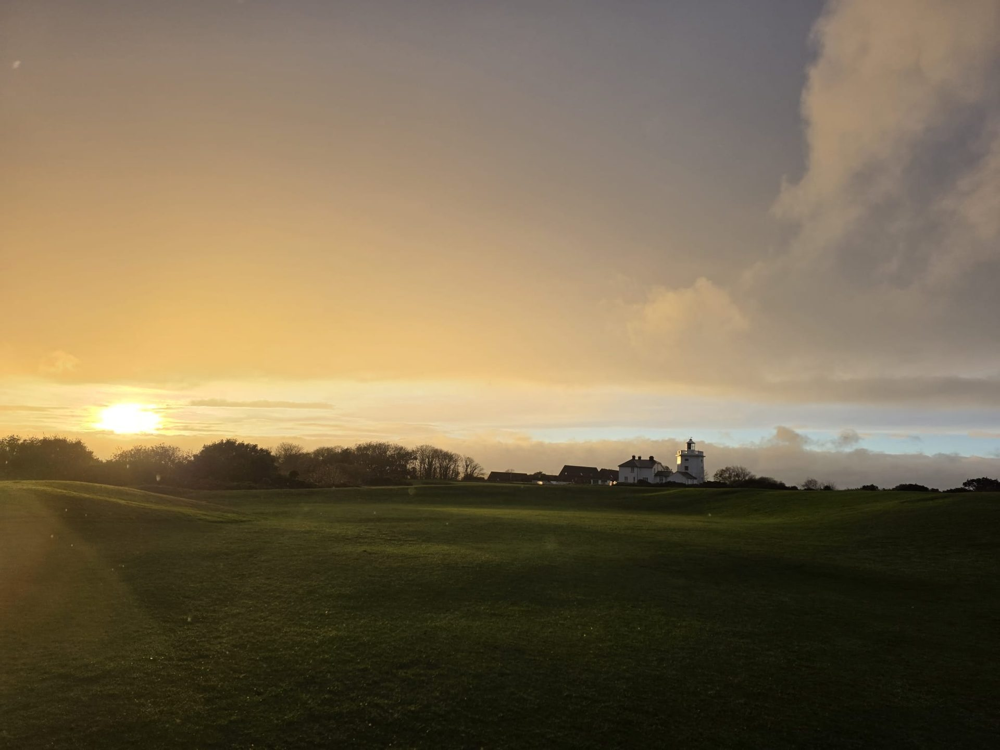

People · Coaching
There is a moment that happens in a good golf lesson — a moment when something clicks, when a movement that has felt impossible suddenly feels inevitable, when the ball goes where you intended it to go and you understand, perhaps for the first time, that this game can actually be learned. That moment is what Pascal Ogden spends his professional life creating.
"Pascal took my handicap from 28 to 8 in twelve months. I built Golf East Anglia around him because I've seen first-hand what he can do."
Andy Carroll — Founder, Golf East AngliaHe is the PGA professional at the heart of Golf East Anglia, and the reason our coaching experience is not a bolt-on extra but a genuine reason to come.
Pascal turned professional in 2009 and spent eight years competing on the EuroPro Tour and mini-tours across the world. He recorded three professional wins, and along the way beat players of genuine calibre — including Senior Open Champion Paul Broadhurst, DP World Tour regular Marcus Armitage, and two-time Walker Cup player Gary Woolstenholme. Those are results that tell you everything about the standard he reached.
But what he is proudest of, by his own account, is something quieter than the wins. It is that he kept improving throughout his career — that he never stopped analysing, questioning, refining. He worked for twelve years alongside Graham Walker, who is short game coach to Tommy Fleetwood and personal coach to Paul Waring. He spent five years with Alan Thompson. He didn't just play professional golf; he studied it, at its highest level, for over a decade.
When he finished competing in 2017, he brought all of that understanding to teaching. And he brought something else that most PGA professionals don't have: a law degree.
"I have forensically broken the swing down so that each lesson is easy to digest."
Pascal OgdenIt sounds like an unusual combination. In practice, it makes Pascal a remarkable teacher. Law trains you to take complex systems apart and reassemble them in language that is precise and clear. Pascal applied exactly that approach to the golf swing — and came up with a model of sequential movements that can be defined, demonstrated, and taught to anyone willing to learn.
The result is a coaching style that his students describe consistently in the same terms: that he sees things clearly, explains them simply, and leaves you with something useable. Not theory. Not data. Something you can actually take to the first tee.
He uses TrackMan where it helps, video analysis where it illuminates. But he is clear-eyed about technology's proper role: it is a tool in service of understanding, not a replacement for it. The best thing he can give any student is a thought — one good, clear, actionable thought — that changes how they move.

If you want to understand a coach's real quality, watch them with children. Children have no patience for credentials. They respond to clarity, to energy, to genuine enthusiasm — and to someone who makes them feel that the game is within their reach. Pascal has all of those qualities in abundance.
He built his junior programme at Bramall Park Golf Club in Cheshire from a handful of children into a section of nearly 100 young golfers, a significant proportion of whom are now competing with real promise. That growth is not the result of marketing. It is the result of children telling other children that Saturday mornings with Pascal are something worth showing up for.
The programme is game-based and challenge-led. Rather than isolating technique in a vacuum, Pascal builds skills through situations that mirror real golf — games, competitions, problems to solve. The children learn to think as well as swing. They leave each session with something new and with the quiet confidence that comes from knowing they can actually do it.
One parent who has watched the programme closely puts it simply: "He has this quality of making every child feel like the most important person on the range. They all leave standing a little taller than when they arrived."
Pascal is half-French, which brings a dimension to the Golf East Anglia Côte d'Opale Collection that no amount of research could replicate. He knows northern France the way you know a place that is part of you — the courses, the food, the wine, the particular quality of light over the dunes at Belle Dune in late afternoon.
He leads the Côte d'Opale trip personally. Each morning on the championship courses, he provides coaching tailored to links conditions — the low running approach, the wind-managed trajectory, the short game that functions on firm and fast turf. Each evening, he draws on a genuine expertise in French wine to guide a tasting that has become one of the most talked-about elements of the trip.
It is a rare thing: a coach who is equally at home on the lesson tee and at the dinner table. Pascal is both, without effort.
"A session with Pascal before you play a links course is the single best investment you can make in your golf holiday."
Golf East AngliaAs part of a Golf East Anglia itinerary, Pascal's coaching is available in two forms. A pre-round session tailored specifically to the course you are about to play — the characteristics of the greens at Royal Cromer, the wind patterns at Hunstanton, the demands of approaching Brancaster in any kind of breeze. And an on-course playing lesson, walking with you through the round, reading the same shots you are reading, offering the kind of real-time insight that a practice ground session can never fully replicate.
Both are available as optional additions to any itinerary. Both, once taken, tend to become essential. Golfers who have played the north Norfolk coast with Pascal coaching them describe it as the best they have ever played — not just on this coast, but anywhere.
Four championship courses in northern France. Daily PGA coaching. A sommelier wine evening, private dinners, and a farewell at Calais Vins. Le Manoir hotel throughout. £1,995 per person. Places limited to 14 guests.
Reserve your place